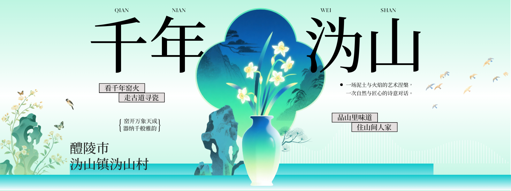

四山青翠俨城郭，曲水潺湲奏管弦。
来沩山——看千年窑火，走古道寻瓷，品山里味道，住山间人家。

沩山村概况
沩山村位于湖南省株洲市醴陵市沩山镇，地处醴陵市东北部山谷盆地中，距离市区15公里。四面环山，因沩水蜿蜒而过如月形而得名，拥有储量极丰的高岭土和充沛的水资源，是千年醴陵陶瓷的发源地。
这里保存了自宋至清代的古窑址100余座，与窑相关的瓷泥矿井、瓷器运输古道、生活设施、庙宇古塔等文物古迹100余处，完整保留了原生态的自然与历史人文环境。一条沩山河流经整个山谷，民居依水而建，青山灵秀，树木葳蕤，一湾溪水清澈灵动。土黄色的古民居错落有致，古窑、古塔、古井、古桥、古瓷片如群星散落村庄。这里是醴陵沩山——千年窑火的故乡，中国陶瓷发展史的"活辞典"。
荣誉称号
| 年份 | 荣誉 |
|---|---|
| 2010年 | 入选湖南省历史文化名村 |
| 2013年 | 醴陵窑被国务院公布为第七批全国重点文物保护单位 |
| 2018年 | 沩山村入选中国历史文化名村 |
| 2018年 | 沩山村获评第五批中国传统村落 |
| 2019年 | 沩山村入选第一批国家森林乡村名单 |
| 2023年 | 沩山村被确定为第五批湖南省乡村旅游重点村 |
沩山风光

醴陵窑全景
远山、古窑、溪流、炊烟——沩山的第一眼印象，从这里开始。